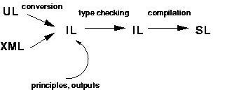

Next: Dimensions, Up: Compiler
The purpose of the grammar file compiler is to compile grammar files in one of the various grammar file input languages into a grammar usable by the XDK solver.
Grammar files serve two purposes:
For 1., each grammar file defines the dimensions used by the instance, and on each of these dimensions, the principles and parameters which apply to it. Additionally, the grammar file specifies on each dimension which outputs apply to it. The XDK includes libraries of predefined principles (principle library) and of predefined outputs (output library). These libraries can be extended by new principles and new outputs according to the interfaces described in the developer sections.
For 2., each grammar file defines a number of lexical classes and a number of unexpanded lexical entries.
Grammar files can be written in various languages. In the current version of the XDK, you can choose between the User Language (UL), the XML language, and the Intermediate Language (IL). We recommend the UL for handcrafted grammar development. The XML language is better suited for electronic processing of grammars. The IL is designed to be the internal language for the grammar file compiler - we do not recommend to write grammars in that language. It is rather hard to read, and, more importantly, if you write your grammars in the IL directly, the grammar file compiler cannot tell you the whereabouts of an error. The grammar file compiler first converts each UL and XML grammar file into an IL grammar file, which can be processed uniformly from then on.
All programs of XDK can open grammar files in the following formats (with the following default file name suffixes):
ul)
xml)
ilp)
grammar (ozf)
slp).
Grammar files are statically typed. The grammar file compiler performs type checking on used principles and lexical classes and entries.
After type checking, the grammar file compiler transforms the type checked IL grammar file into a grammar file in the Solver Language (SL) which can be fed into the XDK solver. The lexicon of the SL grammar file does not contain lexical classes anymore: it contains only the lexical entries which result from compiling out the lexical entries in the IL grammar file.
An arbitrary number of grammars can be merged into one. The prerequisite for merging is that all the grammars must share the same type definitions.
In the picture below, we summarize of the stages of processing the grammar file compiler performs:

That is:
Internally, the functors Compiler/UL/Parser.oz and then
Compiler/UL/2ILConverter.oz convert UL grammar files into IL
grammar files.
The functors Compiler/XML/Parser.oz and then
Compiler/XML/2ILConverter.oz convert XML language grammar files
into IL grammar files.
Then, the functor Compiler/TypeCollector.oz collects all the
types defined in the IL grammar file.
Then, the functor Compiler/TypeChecker.oz type-checks the IL
grammar file.
Then, the functor Compiler/Encoder.oz encodes the IL grammar
file using the lattice functors corresponding to the types (defined in
Compiler/Lattices/). This step yields a stateless Solver
Language (SL)
grammar record
which can be saved to disk and loaded again (i.e. pickled
in Oz terminology).
Finally, the functor Compiler/Compiler.oz compiles the
stateless SL grammar into a stateful SL grammar record which can be
used by the XDK solver.